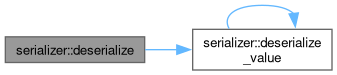
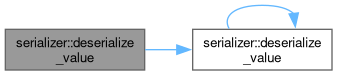
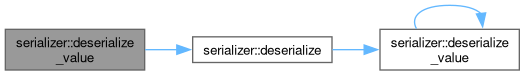
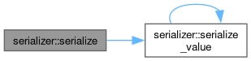
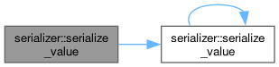
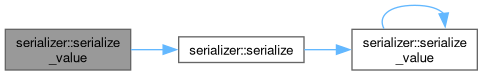

Loading...
Searching...
No Matches
serializer Namespace Reference
Classes | |
| class | SerializationError |
| class | SerializationBuffer |
| class | Serializer |
Concepts | |
| concept | Reflectable |
| concept | String_Like |
| concept | Array_Like |
| concept | Container |
| concept | Trivially_Serializable |
Functions | |
| template<typename T> | |
| void | serialize (const T &obj, std::ostream &os) |
| template<typename T> | |
| void | deserialize (T &obj, std::istream &is) |
| template<Array_Like T> | |
| void | serialize_value (const T &arr, std::ostream &os) |
| template<Array_Like T> | |
| void | deserialize_value (T &arr, std::istream &is) |
| template<Trivially_Serializable T> | |
| void | serialize_value (const T &value, std::ostream &os) |
| template<Trivially_Serializable T> | |
| void | deserialize_value (T &value, std::istream &is) |
| template<String_Like T> | |
| void | serialize_value (const T &str, std::ostream &os) |
| template<String_Like T> | |
| void | deserialize_value (T &str, std::istream &is) |
| template<Container T> | |
| void | serialize_value (const T &container, std::ostream &os) |
| template<Container T> | |
| void | deserialize_value (T &container, std::istream &is) |
| template<typename T> requires Reflectable<T> | |
| void | serialize_value (const T &value, std::ostream &os) |
| template<typename T> requires Reflectable<T> | |
| void | deserialize_value (T &value, std::istream &is) |
Function Documentation
◆ deserialize()
template<typename T>
| void serializer::deserialize | ( | T & | obj, |
| std::istream & | is ) |
Definition at line 253 of file Serializer.h.
253 {
254 obj.visit([&is](const char * /*name*/, auto &member) {
255 size_t nameLen;
256 deserialize_value(nameLen, is);
257 std::string dummy(nameLen, '\0');
258 is.read(&dummy[0], nameLen);
259 deserialize_value(member, is);
260 });
261}
void deserialize_value(T &arr, std::istream &is)
Definition Serializer.h:176
Here is the call graph for this function:

◆ deserialize_value() [1/5]
template<Array_Like T>
| void serializer::deserialize_value | ( | T & | arr, |
| std::istream & | is ) |
◆ deserialize_value() [2/5]
template<Container T>
| void serializer::deserialize_value | ( | T & | container, |
| std::istream & | is ) |
Definition at line 215 of file Serializer.h.
215 {
216 size_t size;
217 deserialize_value(size, is);
218 container.clear();
219 if constexpr (requires { container.reserve(size); }) { container.reserve(size); }
220 for (size_t i = 0; i < size; ++i) {
221 typename T::value_type item;
222 deserialize_value(item, is);
223 container.insert(container.end(), std::move(item));
224 }
225}
Here is the call graph for this function:

◆ deserialize_value() [3/5]
template<String_Like T>
| void serializer::deserialize_value | ( | T & | str, |
| std::istream & | is ) |
Definition at line 200 of file Serializer.h.
Here is the call graph for this function:

◆ deserialize_value() [4/5]
template<typename T>
requires Reflectable<T>
requires Reflectable<T>
| void serializer::deserialize_value | ( | T & | value, |
| std::istream & | is ) |
Definition at line 235 of file Serializer.h.
Here is the call graph for this function:

◆ deserialize_value() [5/5]
template<Trivially_Serializable T>
| void serializer::deserialize_value | ( | T & | value, |
| std::istream & | is ) |
Definition at line 186 of file Serializer.h.
186 {
187 if (!is.read(reinterpret_cast<char *>(&value), sizeof(T))) {
189 }
190}
◆ serialize()
template<typename T>
| void serializer::serialize | ( | const T & | obj, |
| std::ostream & | os ) |
Definition at line 243 of file Serializer.h.
243 {
244 obj.visit([&os](const char *name, const auto &member) {
245 size_t nameLen = std::strlen(name);
246 serialize_value(nameLen, os);
247 os.write(name, nameLen);
248 serialize_value(member, os);
249 });
250}
void serialize_value(const T &arr, std::ostream &os)
Definition Serializer.h:171
Here is the call graph for this function:

◆ serialize_value() [1/5]
template<Array_Like T>
| void serializer::serialize_value | ( | const T & | arr, |
| std::ostream & | os ) |
◆ serialize_value() [2/5]
template<Container T>
| void serializer::serialize_value | ( | const T & | container, |
| std::ostream & | os ) |
Definition at line 208 of file Serializer.h.
Here is the call graph for this function:

◆ serialize_value() [3/5]
template<String_Like T>
| void serializer::serialize_value | ( | const T & | str, |
| std::ostream & | os ) |
Definition at line 193 of file Serializer.h.
193 {
194 const size_t size = str.size();
195 serialize_value(size, os);
196 os.write(str.data(), size);
197}
Here is the call graph for this function:

◆ serialize_value() [4/5]
template<typename T>
requires Reflectable<T>
requires Reflectable<T>
| void serializer::serialize_value | ( | const T & | value, |
| std::ostream & | os ) |
Definition at line 229 of file Serializer.h.
Here is the call graph for this function:

◆ serialize_value() [5/5]
template<Trivially_Serializable T>
| void serializer::serialize_value | ( | const T & | value, |
| std::ostream & | os ) |
Definition at line 181 of file Serializer.h.
181 {
182 os.write(reinterpret_cast<const char *>(&value), sizeof(T));
183}